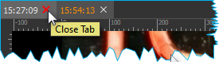
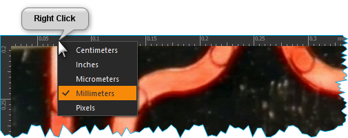
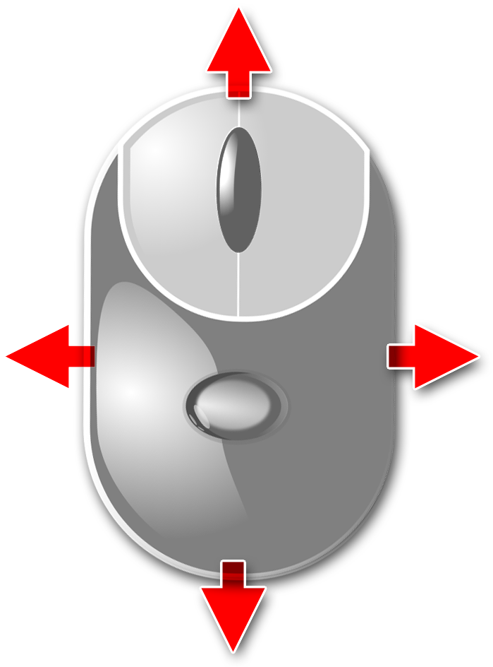
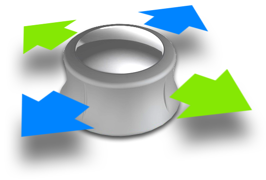
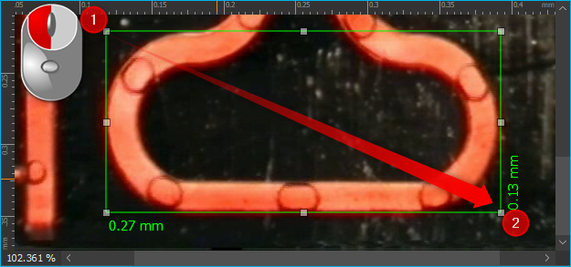
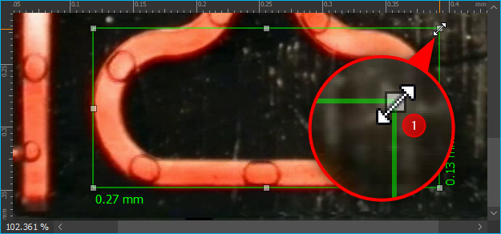

16. Bildbetrachter / Bildanalyse Plugin
16.1. Einführung
Dieses Plugin ermöglicht es Ihnen, Bilder unterschiedlicher Formate (PNG, JPG) zu öffnen und zu speichern. Zusätzlich können Sie damit:
die Bilder stufenlos Vergrößern und Verkleinern
bequem im Bild navigieren
Größen von Objekten im Bild messen

Den View des Bildanalyse Plugins können Sie über den Menüpunkt in der Seitenleiste aufrufen. Wenn noch kein Bild geladen wurde, ist der Arbeitsbereich noch leer. Die Oberfläche des Plugins besteht aus der Werkzeugleiste ❶ und dem eigentlichen Bildbetrachter ❷.
16.2. Werkzeugleiste
|
Bilddatei öffnen |
aktuell angezeigte Bilddatei speichern |
|
|
Ändert die Vergrößerung des Bildes so, dass es vollständig in den Bildbetrachter passt |
Ändert die Vergrößerung des Bildes auf die tatsächliche Pixelgröße |
|
Erhöht den Vergrößerungsfaktor |
|
|
Verringert den Vergrößerungsfaktor |
|
Handwerkzeuge zum Verschieben des aktuellen Bildausschnittes |
|
Messrechteck zeichnen |
|
Alle Messobjekte entfernen |


Tipp
Sie können Bilder auch einfach per Drag & Drop (Ziehen und Ablegen) laden. Ziehen Sie dafür einfach eine Bild-Datei aus Ihrem Dateisystem auf den Bildanalyse-Arbeitsbereich.
16.3. Bildbetrachter
16.3.1. Übersicht
Der eigentliche Bildbetrachter besteht aus den folgenden Komponenten:
Karteireiter zur Auswahl des aktuellen Bildes (bei mehreren geöffneten Bilddateien)
Lineale zur Anzeige der Bildabmessungen
Leinwand zur Bilddarstellung
Statuszeile zur Anzeige der Vergrößerung (100% entspricht der tatsächlichen Bildgröße)
Scrollbalken zur Bildnavigation.
Immer wenn Sie ein Bild öffnen, z.B. wenn Sie eine Bilddatei laden oder mit der Kamera ein Bild aufnehmen, wir ein neuer Karteireiter hinzugefügt mit dem Namen des Bildes. Durch das Auswählen eines Karteireiters, können Sie zwischen den verschiedenen geöffneten Dateien wechseln.
Um einen Karteireiter zu schließen, klicken Sie mit der linken Maustaste die Schließen-Schaltfläche des betreffenden Karteireiters (siehe Abbildung unten) an.
Wenn Sie mit der rechten Maustaste in den Bildbetrachter klicken, wird Ihnen ein Kontextmenü angezeigt, in dem Sie wichtige Funktionen aus der Werkzeugleiste wiederfinden und so ggf. schneller im Zugriff haben.

16.3.2. Maßeinheiten auswählen
Sie können die Maßeinheit auswählen, die in den Linealen und beim Messen von Bildobjekten verwendet wird. Klicken Sie dafür mit der rechten Maustaste auf ein Lineal und wählen Sie dann die Maßeinheit (siehe Abbildung).
16.3.3. Vergrößerung ändern
Verwenden Sie zur Einstellung der Vergrößerung die Schaltflächen aus der Werkzeugleiste. Alternativ können Sie die Vergrößerung auch bequem durch Drehen des Mausrades verändern.
|
Vergrößerungsfaktor erhöhen (hineinzoomen) |
|
|
|
Vergrößerungsfaktor verringern (heraus zoomen) |


16.4. Bildnavigation
16.4.2. Navigation mit Hand-Werkzeug

Aktivieren Sie das Werkzeug Pan Tool um die Panoramadarstellung in der Anzeige zu verschieben. Klicken Sie zum Verschieben nun einfach in die Bildanzeige und halten Sie die linke Maustaste gerückt, während Sie die Maus bewegen. Der aktuelle Bildausschnitt folgt nun den Bewegungen der Maus.
16.4.3. Navigation mit der Maus
Sie können auch die Maus verwenden, um interaktiv im Panorama zu navigieren. Gehen Sie dafür wie folgt vor:
Klicken Sie mit der mittleren Maustaste in die Panoramadarstellung

Es wird nun ein Navigationskreuz eingeblendet und die freie Navigation wird aktiviert

Sie können nun durch verschieben der Maus den aktuell sichtbaren Ausschnitt in der Panoramadarstellung verschieben. Je weiter Sie den Mauszeiger von dem eingeblendeten Navigationskreuz weg bewegen, um so schneller wird der Bildausschnitt verschoben verschoben.

16.4.4. Navigation mit der SpaceMouse
Wenn das SpaceNavigator Plugin geladen wurde, können Sie auch alternativ mit der SpaceMouse in der Abbildung navigieren.

Die SpaceMouse ist ein intuitives Eingabegerät welches Ihnen die Navigation innerhalb des Bildbetrachters in X- und Y-Richtung gleichzeitig ermöglicht. Um die SpaceMouse zu nutzen, schließen Sie diese an einen freien USB Anschluss an Ihren PC an. Aktuelle Treiber finden Sie auf unserer Internetseite:
https://cetoni.de/software-downloads/
oder auf dem Datenträger (CD oder USB-Stick), den Sie beim Kauf der Software erhalten haben. Installieren Sie den Treiber, um die SpaceMouse zu verwenden. Positionieren Sie diese so, dass das Verbindungskabel von Ihnen weg zeigt und der 3D Connexion Schriftzug von Ihnen aus lesbar ist.

Um die digitale Vergrößerung des aktuellen Bildes zu ändern, drücken Sie das Steuerelement des Navigators nach unten oder ziehen Sie es nach oben (Abbildung unten).

Um den im Bildbetrachtungsfeld angezeigten Bildausschnitt anzupassen, drehen Sie den Navigationsknopf der SpaceMouse in die gewünschte Richtung.
Die Geschwindigkeit, mit der der Bildausschnitt verschoben oder die Vergrößerung geändert wird, kontrollieren Sie durch die Stärke der Auslenkung des Bedienteils. D.h. je stärker Sie das Bedienelement in eine bestimmte Richtung drücken oder drehen, umso schneller bewegt sich die „virtuelle Kamera“.
Bildausschnitt nach links / rechts verschieben |
|
|
Bildausschnitt nach oben / unten verschieben |
Digitale Vergrößerung erhöhen / verringern |

{kind=link}
{kind=link}
{kind=link}
{kind=link}
{kind=link}
{kind=link}
16.5. Bildobjekte messen
16.5.1. Maßrechteck zeichnen
Tipp
Stellen Sie vor dem Zeichnen des Maßrechteckes die gewünschte Maßeinheit ein um die Maßangaben in dieser Einheit zu erhalten.
Sie können wie folgt ein Maßrechteck zeichnen:
Klicken Sie auf die Schaltfläche Measure Rectangle in der Werkzeugleiste um das Maßwerkzeug zu aktivieren.

Klicken Sie mit der linken Maustaste in den Bildbetrachter an die Stelle der linken oberen Ecke des Maßrechteckes ❶.
Ziehen Sie nun bei gedrückter linker Maustaste das Rechteck auf die gewünschte Größe und lassen Sie dann die Maustaste los ❷.
16.5.2. Maßrechteck verschieben
Zum Verschieben eines Maßrechteckes bewegen Sie einfach die Maus über das Rechteck bis der Mauszeiger sich in ein Pfeilkreuz verwandelt ❶. Drücken Sie dann die linke Maustaste und ziehen Sie das Maßrechteck mit gedrückter Maustaste an seine neue Position ❷ und lassen Sie die Maustaste dann dort los.

16.5.3. Größe des Maßrechteckes anpassen
Um die Größe des Maßrechteckes zu ändern, klicken Sie einfach auf eine der Markierungen auf den Ecken und Seiten des Maßrechteckes (Abbildung unten). Sobald der Mauszeiger seine Form ändert ❶, können Sie die ausgewählte Seite oder Ecke durch Drücken der linken Maustaste und ziehen der Maus verschieben.
16.5.4. Maßrechteck löschen
Sie können ein einzelnes Maßrechteck löschen, indem Sie es durch Anklicken auswählen und dann die Delete-Taste drücken.

Wenn Sie die Schaltfläche Delete measuring lines in der Werkzeugleiste oder im Kontextmenü anklicken, können Sie alle Maßlinien aus dem aktuellen Bild entfernen.